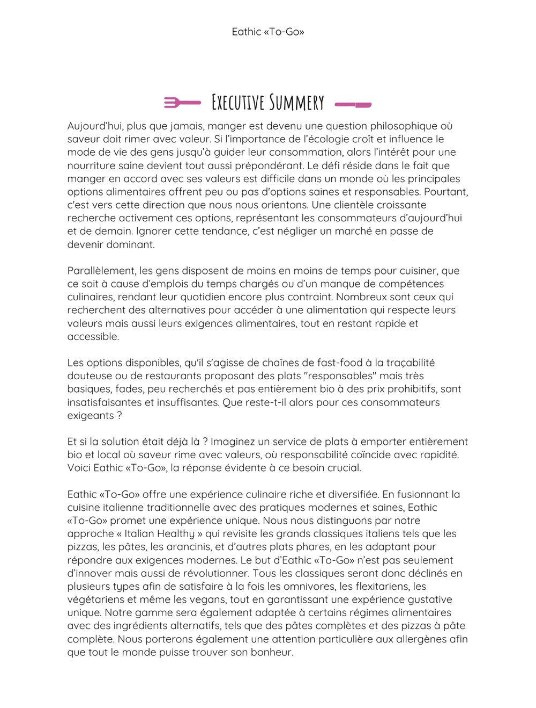
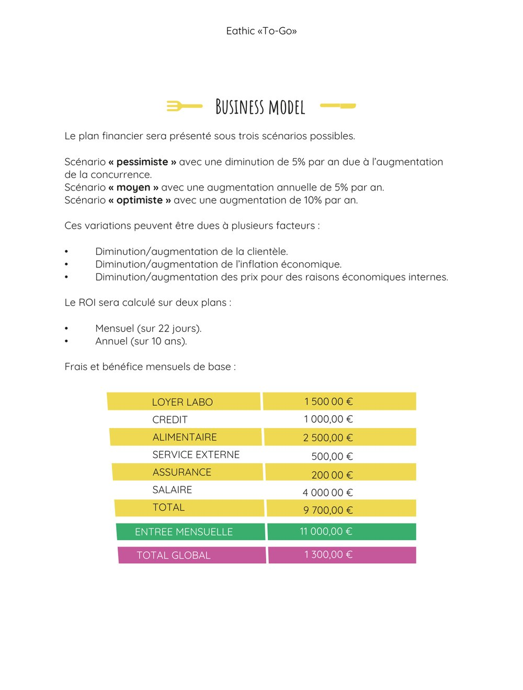
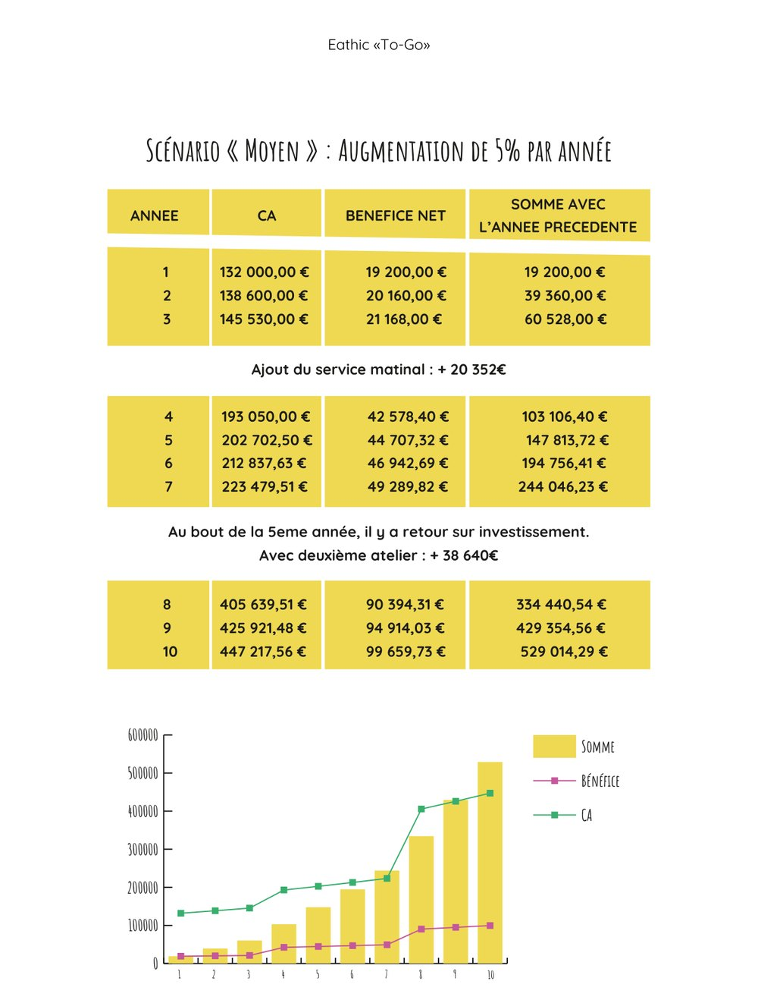

Business plans — Étude 04
Eathic « To-Go » — plats à emporter bio et locaux
Exercice d'analyse et de rédaction : établir le business plan d'un service de plats à emporter italiens, entièrement bio et locaux, adaptés à différents régimes alimentaires. Eathic est un nom de marque inventé.
Contexte
L'exercice consistait à évaluer un concept de restauration sans salle : une cuisine dédiée à la vente à emporter et à la livraison, préparant des plats italiens déclinés pour tous les régimes (omnivore, flexitarien, végétarien, vegan), à destination de Paris.
Le travail devait s'appuyer sur des données réelles : tendances de consommation (alimentation saine et durable, produits à base de plantes), segmentation des clientèles et modélisation financière sous plusieurs scénarios.
Méthode
L'étude a été construite en trois volets :
- étude de marché documentaire — croissance du marché des aliments à base de plantes et préoccupations écologiques des consommateurs, à partir de données publiées ;
- segmentation — identification de segments de clientèle spécifiques (offre dédiée aux enfants, production partagée avec d'autres professionnels) ;
- modélisation financière — construction de trois scénarios (pessimiste, moyen, optimiste) sur dix ans, avec calcul du retour sur investissement.
Résultat
Les tableaux ci-dessous reprennent les données de marché et les scénarios financiers retenus dans l'étude. Les valeurs proviennent des sources citées. Le détail des frais figure dans les captures ci-dessous.
| Indicateur | Valeur | Source |
|---|---|---|
| Marché mondial des aliments à base de plantes (2022 → 2032) | 42,8 → 99,7 milliards USD (TCAC 8,82 %) | SkyQuest Technology |
| Marché des aliments à base de plantes (2023 → 2033) | 11,3 → 35,9 milliards USD (TCAC 12,2 %) | Future Insights |
| Consommateurs (Royaume-Uni et États-Unis) recherchant des produits personnalisés | environ 20 % | McKinsey & Company |
| Scénario | Évolution annuelle du chiffre d'affaires | Retour sur investissement (10 ans) |
|---|---|---|
| Pessimiste | baisse de 5 % par an | 25,24 % |
| Moyen | hausse de 5 % par an | 26,48 % |
| Optimiste | hausse de 10 % par an | 47,95 % |



Ce que cela démontre
Exploitation de données de marché publiées pour cadrer un positionnement et une segmentation de clientèle. Construction d'un modèle financier multi-scénarios avec calcul du retour sur investissement, pour objectiver la rentabilité d'un concept.